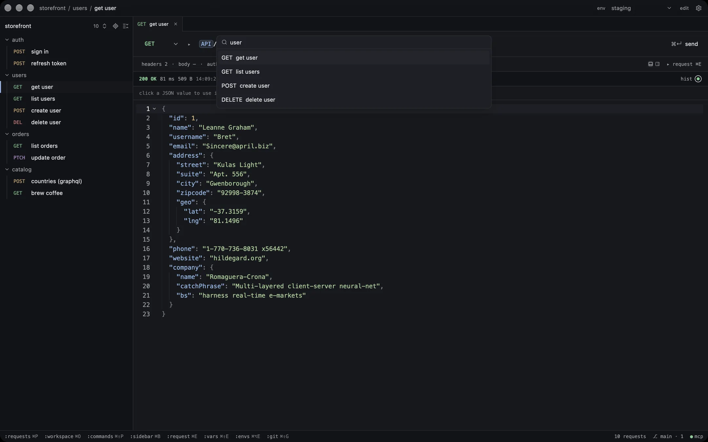
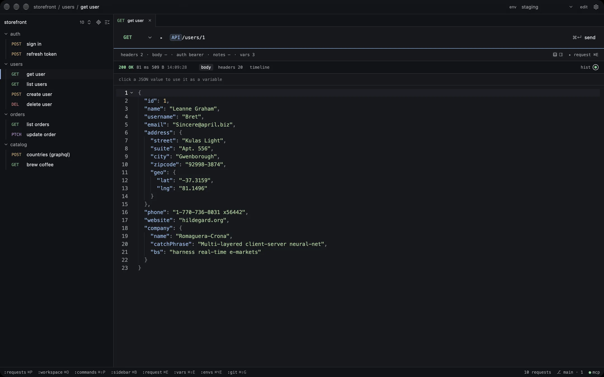
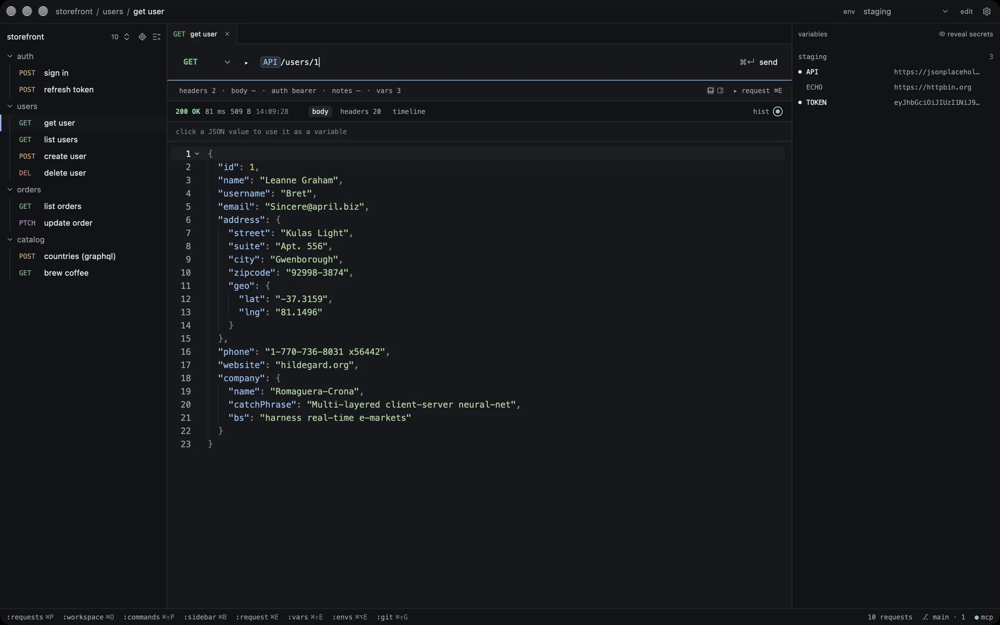

Variables as chips
{{ API }} reads the active environment and folder at send time. The log shows what went out.
environments, folders, secrets
A native, keyboard-first API console for macOS, written in Rust: an open-source Postman alternative. Your requests live as YAML in git, and your AI agent can send them too.
Every send wakes her up. Press ⌘↵ to send a real one.
Press them on your keyboard while this is in view, or tap them. Yuki itself works the same way.






⌘P · open any request
One send of get user from the screens above, itemised. Nothing is kept in a database: the request is a file you can read, diff and commit.
Totalone request, one YAML file
Everything here works in the URL, params, headers, body and auth, and your agent can use it too.
Read the README{{ API }} reads the active environment and folder at send time. The log shows what went out.
environments, folders, secrets
$fake.email(), $uuid.v4(), $timestamp.iso() and more. Type $ to see a sample of each.
$fake, $uuid, $timestamp
Click a field in a JSON response and press ⌥↵. A login's token becomes a variable that refreshes itself.
JSONPath, ⌥↵, pointers
Import Postman, Insomnia, Yaak, Bruno, OpenAPI or Voleeo. Export to Postman, Insomnia, Yaak or Voleeo.
import, export, ⌘⇧P
While Yuki is open, Claude Code, Codex, Cursor or Claude Desktop can list, edit and send your requests. No token, no port.
claude mcp add -s user yuki -- \
/Applications/Yuki.app/Contents/MacOS/yuki mcpYuki is named after a tuxedo cat who sleeps through most of the day, which is also how an empty response looks in the app. It is a native console for macOS, written in Rust on GPUI, the framework behind Zed. The engine that sends, resolves and stores requests began in Voleeo, also MIT, and Yuki is a new app around it. All of it is MIT: no feature sits behind a paywall, and personal use of the official build is free. Requests are plain YAML, one folder per workspace, each folder its own git repository, so a collection gets reviewed like code. The official build isn't notarized by Apple yet, so the first launch needs one manual step. Read the source on GitHub.